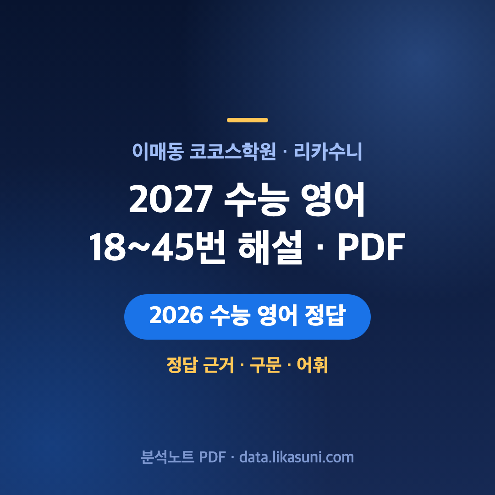

2027 수능 영어 해설 모음이에요. (2026년 11월 시행 2027학년도 대학수학능력시험 영어 18~45번, 2026 수능 영어)
번호별 정답·유형·핵심 내용을 한눈에 정리했고, 문항별 해설(정답 근거·오답 이유·구문·어휘)과 문제지·정답 pdf 보는 곳은 글 아래에 있어요.
안녕하세요, 이매동 코코스학원 리카수니 원장입니다.
수능을 본 학생, 내년 수능을 준비하는 학생 모두 많이 찾아 주셔서 영어 독해 18~45번 해설을 끝까지 채웠어요. 시험지를 옆에 펴 놓고 보세요. (정답은 평가원 정답표 홀수형 기준이에요.)
· 18번 목적 ⑤ – 호텔 베개 덕분에 푹 잔 손님이 베개 구입처를 묻는 편지
· 19번 심경 ① – 빵 반죽이 안 부풀어 좌절했다가 부풀자 신이 난 Christine
· 20번 주장 ② – 야생 동물을 찍기 전에 그 동물을 충분히 공부해야 한다
· 21번 함축 의미 ② (3점) – 데이터를 감춰 두는 회사는 닻을 끌고 가듯 뒤처진다 (dragging an anchor)
· 22번 요지 ⑤ – 무엇을 찾는지 아는 독자가 가장 빠르고 많이 읽어 낸다
· 23번 주제 ② – 부모 식물이 겪은 환경이 자손에게 대물림된다
· 24번 제목 ⑤ – 첨단 유통 기술로 신선 식품이 전 세계에서 동네 마트로 온다
· 25번 도표 ⑤ – 6개 도시의 매우 더운 날 수 (워싱턴 D.C. 13→32, 3배가 안 됨)
· 26번 내용 불일치 ④ – 생물학자 Dorothy L. Cheney (책은 남편과 함께 씀)
· 27번 안내문 불일치 ⑤ – Brain Power Memory Championship (온라인 등록 불가)
· 28번 안내문 일치 ④ – Fix-it Festival (아이들 자전거 수업)
· 29번 어법 ③ – think → Thinking (동명사 주어, 진짜 동사는 helps)
· 30번 어휘 ③ (3점) – 집단 지성의 한계: 지능은 더해지지 않는 개인의 능력
· 31번 빈칸 ① – 조작 장치를 여러 단계로 만들면 실수가 줄어든다
· 32번 빈칸 ① – VR은 영화처럼 '언제, 어떻게 볼지'를 정해 줄 수 없다
· 33번 빈칸 ⑤ (3점) – 문화 차이가 있으려면 사회 안에서는 규범을 따라야 한다
· 34번 빈칸 ③ (3점) – 그림의 구성이 시간 속에서 차례로 지각될 때 리듬이 된다
· 35번 무관한 문장 ③ – 온라인 게임·e스포츠 확산 요인 (③만 소셜 미디어 이야기)
· 36번 순서 ② – 곤충이 사라지면 사람의 식량에도 문제 (B)–(A)–(C)
· 37번 순서 ④ (3점) – 박물관은 부유층의 수집품에서 시작되었다
· 38번 문장 삽입 ③ – 잠은 단순한 휴식이 아니다
· 39번 문장 삽입 ④ (3점) – 경쟁이 거세지면 혁신만이 살아남는 길이 된다
· 40번 요약문 ② – 광고는 태도를 기르고(cultivate) 시험 구매(trials)를 늘린다
· 41번 제목 ① · 42번 어휘 ② (3점)
→ 외계 생명 탐사: 지구의 규칙 안에서 찾을까, 밖에서 찾을까 ((b) contradicts가 틀림)
· 43번 순서 ④ · 44번 지칭 ② · 45번 내용 불일치 ③
→ 결승전 자유투를 놓친 농구부 주장 Andy가 상담으로 마음을 열다
21, 30, 33, 34, 37, 39, 42번
3점 문항은 빈칸·순서·삽입에 몰려 있어요. 틀린 번호가 있으면 그 번호 해설부터 보세요.
1) 29번 어법 – 문장 맨 앞 동사원형이 보이면 뒤에 진짜 동사가 있는지 먼저 찾으세요. '동사가 두 개면 하나는 가짜'예요.
2) 35번 무관한 문장 – ③은 앞 문장의 social media를 이어받아 자연스럽게 읽히지만 게임 이야기가 사라졌어요. 단어가 아니라 주제와 연결되는지 보세요.
3) 42번 어휘 – 같은 주어 It이 fuels → forms → fits perfectly로 계속 '지구 중심 논리를 뒷받침'하는데 (b) contradicts만 반대예요. 방향이 혼자 튀는 단어가 답이에요.
자료실 수능 영어 페이지 위쪽 '화면으로 바로 보기'에서 번호를 누르면 그 문항 해설로 바로 가요. (18번~43~45번, 다운로드 없이 무료)
문항마다 정답 근거 문장, 선택지 해석과 오답 이유, 구문, 어휘, 서술형 대비 한 문장을 정리했어요.
인쇄용 분석노트 pdf 는 카카오 로그인 후 번호를 고르면 카톡으로 받을 수 있어요.
▶ 2027 수능 영어 해설·분석노트·변형문제·단어 pdf
https://data.likasuni.com/suneung/2027/eng/
영어 문제지·정답표·듣기 대본과 국어·수학·한국사·탐구 시험지도 수능 페이지에 모아 두었어요.
▶ 2027학년도 수능 (2026 수능) 전과목 문제·정답 pdf
https://data.likasuni.com/suneung/2027/
▶ 2026 고1·고2 10모 영어 해설도 보기
https://data.likasuni.com/moe/go1/2026-10/eng/
https://data.likasuni.com/moe/go2/2026-10/eng/
분당 이매동 코코스학원은 초등·중등·고등 영어와 수학을 가르쳐요.
모의고사·수능·내신 대비가 궁금하시면 편하게 문의해 주세요.
· 홈페이지: https://www.cocosedu.co.kr/
· 주소: 경기 성남시 분당구 판교로 476 2층